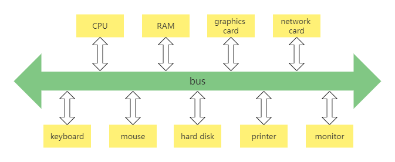
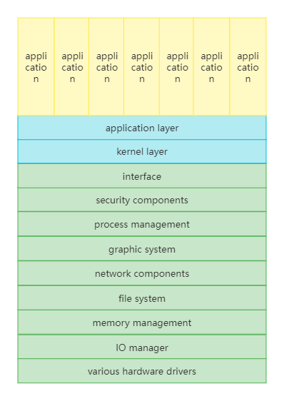
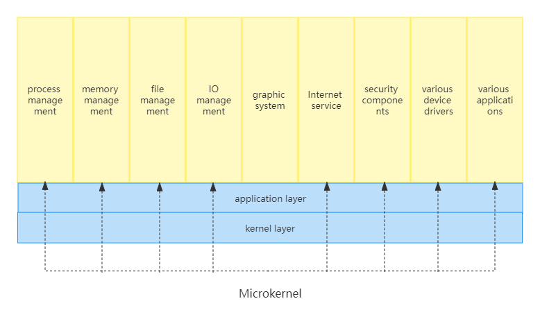
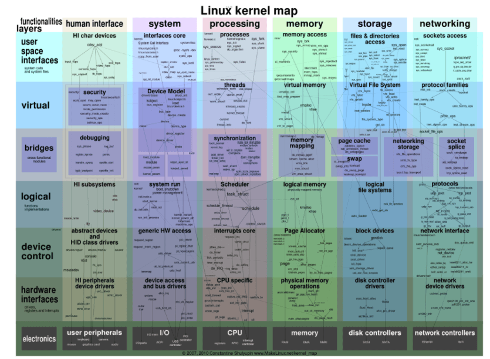
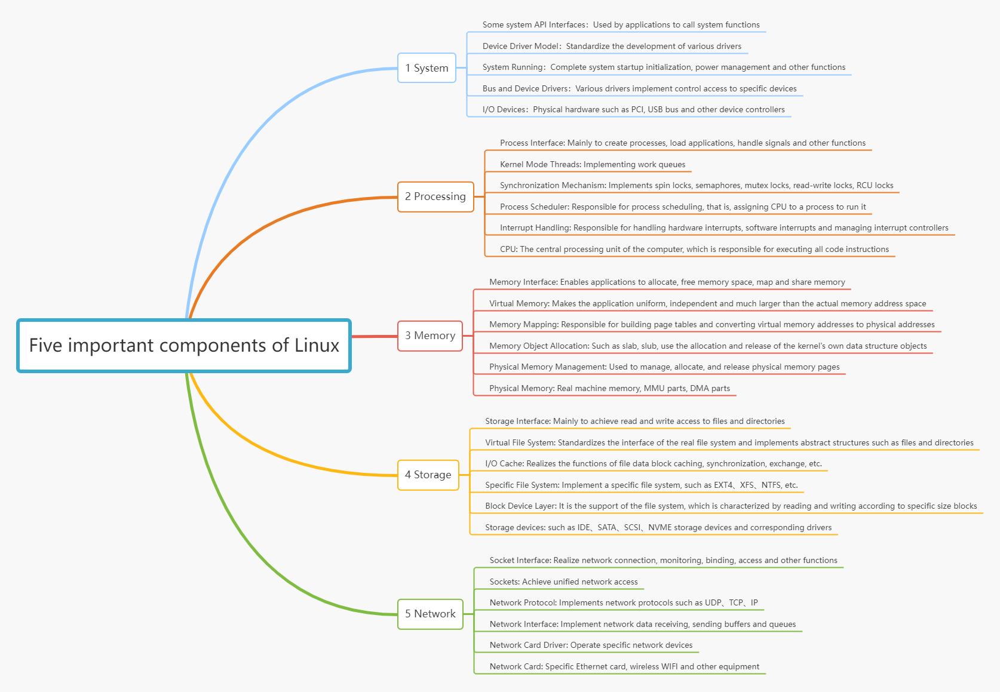
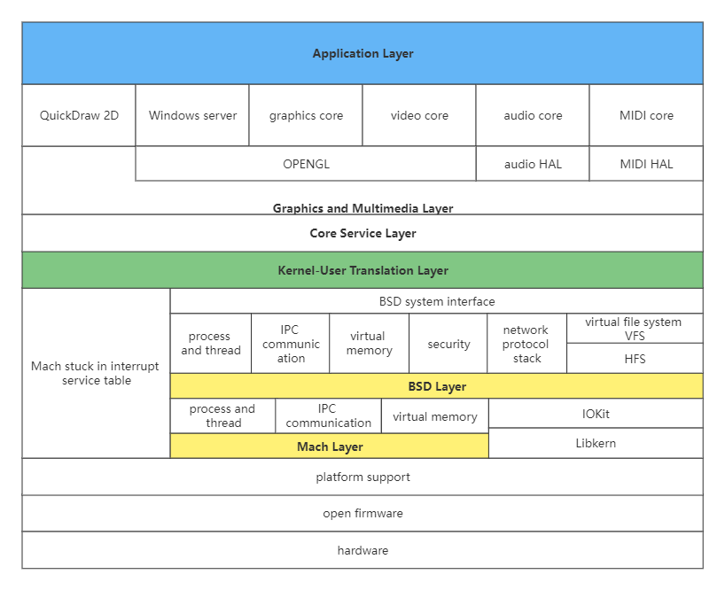
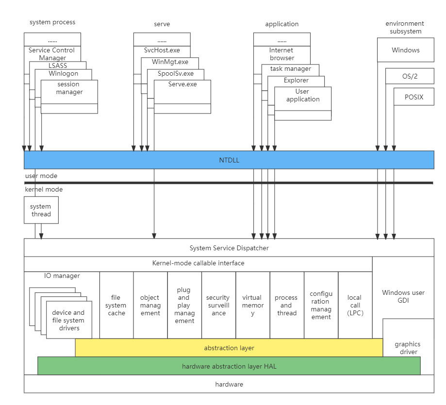

System kernel
From an abstract point of view, the kernel is the manager of computer resources, of course, the management of resources is to allow applications to use resources. Since the kernel is the manager of resources, let’s first take a look at what resources are in the computer, and then through the induction of resources, we can deduce what should be in the big black box of the kernel.
Computer resources can be roughly divided into two types of resources, one is hardware resources, the other is software resources. Let’s take a look at the hardware resources first, as follows:
- Bus，it is responsible for connecting various other devices and is the basis for the work of other devices.
- CPU，the central processing unit, is responsible for executing programs and processing data operations.
- Memory，it is responsible for storing code and data at runtime.
- Hard disk，it is responsible for long-term storage of user file data.
- Network card，it is responsible for the communication between the computers.
- Graphics card，it is responsible for display work.
- Various I/O devices，such as monitors, printers, keyboards, mice, etc.
A typical internal structure diagram of a computer is given below, as follows:

The software resources in the computer can be represented as various forms of data in the computer. Such as various files, software programs, etc. As the manager of hardware resources and software resources, the internal composition of the kernel is roughly as follows:
- Manage CPU，Since the CPU executes the program, and the kernel abstracts the runtime program into a process, it is also called process management.
- Manage memory，Since both programs and data occupy memory, which is a very precious resource, so the kernel must allocate and release memory very carefully.
- Manage hard disks，The hard disk mainly stores user data, and the kernel abstracts the user data into files, that is, management files. The files need to be organized reasonably to facilitate users to find and read and write, so a file system is formed.
- Manage graphics cards，The graphics card is responsible for displaying information, and now the operating system supports GUI (graphical user interface), and managing the graphics card naturally becomes the graphics system in the kernel.
- Manage network cards，The network card mainly completes network communication. Network communication requires various communication protocols. Finally, a network protocol stack is formed in the kernel, also known as network components.
- Manage various I/O devices，We often refer to keyboards, mice, printers, monitors, etc. as I/O (input and output) devices, which are abstracted into I/O managers in the kernel.
In addition to these necessary components, the kernel also has components such as security components according to different functions. The most worth mentioning is that due to the different performance of various computer hardware, different hardware models, different hardware types, and different hardware manufacturers, the kernel needs to write corresponding codes in order to manage and control these hardwares. Usually, such codes are called for the driver. Hardware manufacturers can write different drivers according to their different hardware and add them to the kernel.
Macro kernel structure
The macro kernel structure, the simplest applicable, is also the earliest kernel structure. The macro kernel is to compile the above code such as process management code, memory management code, various I/O device management code, file system code, graphics system code and other functional module codes, and finally linked together to form one large executable program.
This large program contains all the codes that implement and support these functions, and provides some interfaces to the user application software. These interfaces are the so-called system API functions. This large program will run in the processor’s privileged mode, which is often referred to as macrokernel mode. The structure is shown in the figure below.

Although the diagram is layer by layer, this does not mean that they are hierarchically related, just that they are linked together. In order to understand the working principle of the macro kernel, let’s look at an example. The macro kernel provides the service process of the memory allocation function, as follows:
- The application calls the API (application programming interface) function for memory allocation.
- The processor switches to privileged mode and starts running the kernel code.
- The memory management code in the kernel allocates a block of memory according to a specific algorithm.
- Return the first address of the allocated memory block to the API function of memory allocation.
- The API function of memory allocation returns, the processor starts to run the application program in user mode, the application program gets the first address of a piece of memory, which can be used then.
The macro-kernel structure in the above figure has obvious shortcomings, because it has no modularity, no extensibility, no portability, and is highly coupled together. Once one of the components has a vulnerability, all components in the kernel may have problems. Developing a new feature also requires recompiling, linking, and installing the kernel. In fact, this original macro kernel structure is no longer used. The only advantage of this kind of macro kernel is the performance, because in the kernel, these components can call each other, and the performance is very high.
Microkernel structure
The microkernel architecture is just the opposite of the macrokernel architecture. It advocates that the kernel has as few functions as possible: only process scheduling, interrupt handling, memory space mapping, inter-process communication and other functions.
Developers make the actual process management, memory management, device management, file management and other service functions into service processes. They are the same as user application processes, but they are very special that the functions provided by the macro kernel are exclusively performed by these service processes in the microkernel architecture. The microkernel defines a good mechanism for interprocess communication - messages. To request a related service, the application sends a message corresponding to the service to the microkernel, and the microkernel forwards the message to the related service process, and then the service process completes the related service. The programming model of the service process is to process messages from other processes in a loop to complete related service functions. Its structure is as follows:

In order to understand the engineering principle of the microkernel, let’s take a look at the service process of the microkernel providing the memory allocation function, as follows:
- The application sends the message of memory allocation. The function for sending the message is provided by the microkernel, which is equivalent to the system API. The API (application program interface) of the microkernel is quite small. In extreme cases, only two APIs are required, one for receiving messages, and another for sending messages.
- The processor switches to privileged mode and starts running the kernel code.
- The microkernel code stops the current process and determines to whom the message is sent according to the data in the message packet. The message of allocating memory is of course sent to the memory management service process.
- The memory management service process receives the message and allocates a block of memory.
- The memory management service process will also return the address of the allocated memory block to the kernel in the form of a message, and then continue to wait for the next message.
- The microkernel returns a message containing the memory block address to the application that sent the memory allocation message.
- The processor starts to run the application program in user mode, the application program gets the first address of a piece of memory, and then it can be used.
Although the architecture implementation of the microkernel is different, the general process is the same as above. The same is to allocate memory, turning a few corners under the microkernel, and the messages that come and go bring a lot of overhead. Of course, the switching overhead of each service process is not small. This greatly reduces system performance.
But the microkernel has many advantages. First of all, the system structure is quite clear and conducive to collaborative development. Secondly, the system has good portability, and the amount of microkernel code is very small, so it is not difficult to rewrite the entire kernel. Finally, the microkernel has quite good scalability and extensibility, because those system functions are only one process, and one service process can be removed at any time to reduce system functions, or several service processes can be added to enhance system functions.
The representative works of microkernel are MACH, MINIX, and L4 systems. These systems are all microkernels, but they are not commercial-grade systems. Commercial-grade systems do not use microkernels mainly because of poor performance.
Common operating system kernels
Linux kernel
The basic idea of Linux is that everything is a file: each file has a definite purpose, including user data, commands, configuration parameters, hardware devices, etc. For the operating system kernel, all are treated as various types of files. Linux supports multiple users, and each user has his own special rights to his own files, which ensures that each user does not affect each other. Multitasking is one of the most important features of modern operating systems. Linux allows multiple programs to run simultaneously and independently.
The internal structure of Linux, as shown below.

The above figure is roughly divided into five important components, and each component is divided into many modules running through various levels from top to bottom, and each module has important functions and data structures.

Linux belongs to a typical macro-kernel architecture.
Darwin-XNU kernel
Darwin is an open source operating system developed by Apple in 2000. Darwin is at the heart of the macOS and iOS operating systems. Darwin uses a microkernel (Mach) and corresponding firmware to support different processor platforms and provide the original basic services of the operating system. The upper-level functional system services and tools are integrated with those provided by the BSD system. Apple has also developed a large number of libraries, frameworks and services for it, but they all work in userland and closed source. Let’s take a look at Darwin’s architecture as a whole.

Apparently it has two kernel layers - the Mach layer and the BSD layer. The Mach kernel is a classic microkernel developed by Carnegie Mellon University, which is intended to provide the most basic operating system services to achieve high performance, security, and scalability, while BSD is a UNIX-like operating system, a complete set of operating system services, developed by Berkeley University.
So how does the application use the services of the Darwin system? The application will request the services of the Darwin system through the frameworks and libraries of the user layer, that is, call the Darwin system API.
When calling the Darwin system API, an API number is passed in, and this number is used to index the function that Mach falls into the interrupt service table. At this time, if the API number is less than 0, it indicates that the request is for the service of the Mach kernel. If the API number is greater than 0, it indicates that the service is requested for the BSD kernel, which provides a complete set of standard POSIX interfaces.
There is also an important component in Mach, Libkern, which is a library that provides many low-level operation functions and supports the C++ runtime environment. IOKit also depends on this library, and manages all device drivers and kernel function extension modules. Driver developers can use the C++ object-oriented method to develop drivers. This method is very elegant. You can find a mature driver to inherit it as a parent class. If you want to implement a certain function, you can overload the function in it, at the same time, other drivers are inherited, which greatly saves memory and greatly reduces the possibility of bugs.
Windows NT kernel
Windows NT is a network operating system launched by Microsoft in 1993 for workstations, network servers and mainframe computers. It can also be used as a PC operating system. It is a new operating system developed from scratch and applies all the characteristics of modern hardware, “NT” refers to “new technology” (New Technology).
The NT core is very clear in design, and the degree of coupling between the boundaries between components is very low. Let’s take a look at the NT kernel architecture diagram and see how the NT kernel is “grand and grand”. As shown below:

Microsoft itself defines a small kernel on the HAL layer. Below the small kernel is the hardware abstraction layer HAL. The advantage of this HAL is that different hardware platforms can transplant the system as long as they provide the corresponding HAL. Above the small kernel are various kernel components, which Microsoft calls kernel executives, which perform services related to processes, memory, configuration, I/O file caching, power supply, and plug-and-play, security, and more. Each executive body is independent of each other, and only provides the corresponding interface to the outside world. Other executive bodies need to communicate with other executive bodies through the kernel-mode callable interface or request them to complete corresponding functional services. All device drivers and file systems are managed uniformly by the I/O manager. Drivers can be stacked to form an I/O driver stack, and function requests are encapsulated into I/O packets, which are processed layer by layer in the stack. The graphics subsystem that Windows prides itself on is also in the kernel.
Obviously, the layers in the NT kernel are distinct, and each executive body is independent of each other. This “high cohesion, low coupling” feature is an important criterion for testing whether a software project is excellent. And all of these can be proved by Microsoft’s public WRK code. If you think the WRK code is too small, you can also take a look at REACT OS, the so-called “open source version” of NT.